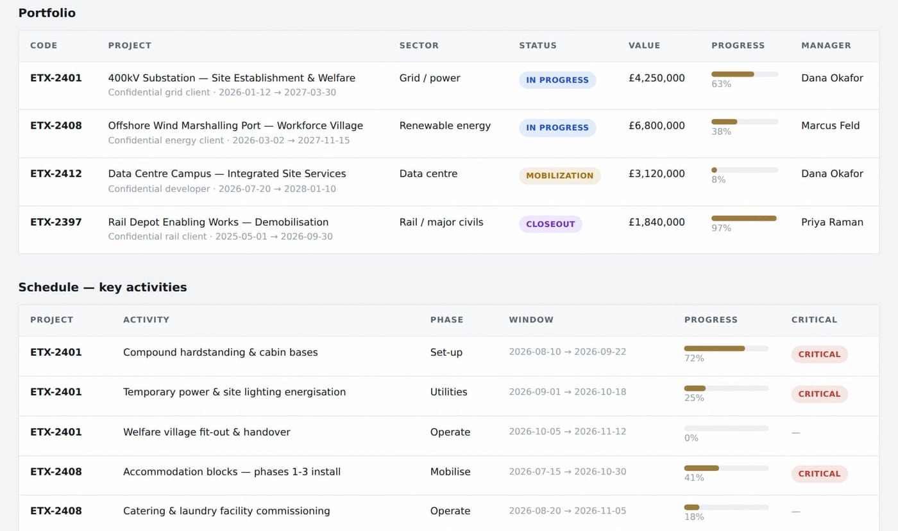

Every temporary-site and workforce-accommodation service on your major projects — planned, procured, integrated and controlled by one contractor, from first mobilisation to final reinstatement.
Substations, converter stations, HVDC landfalls, data-centre connections: more major energy sites will mobilise in the next decade than in the last three. Whatever seat you hold — transmission owner, OEM or principal contractor — three pressures land on the same desks:
Portfolios that once mobilised one flagship site at a time are standing up several at once — each demanding the same scarce set-up expertise, at the same time, often in remote locations.
Project directors and construction managers are specifying cabins, sizing generators and chasing welfare suppliers — senior delivery capacity spent on temporary works instead of the asset you were appointed to build.
Remote sites cannot staff up without beds, catering and welfare that work from day one — and worker-welfare standards are under more scrutiny than ever.
The engineering is world-class. The constraint is everything around it — and today, nobody owns that as one system.
A major site buys its temporary environment as 15–25 separate contracts — cabins, power, water, welfare, security, cleaning, catering, transport, waste, accommodation. Each supplier does exactly what its order says. The seams between them belong to no one:
The generator is sized to a village layout nobody updated. The gatehouse data link sits between two contracts. The cabins arrive before their power does. Each failure is discovered the week you needed it working — and it is discovered by your site team.
Mobilisation delay · prelims escalation · senior delivery hours consumed as the human middleware between suppliers — none of it visible on any single package budget.
Nine points where the plan says nothing about who acts.
One of them, in full:
The power package is sized against the original accommodation layout. The village has since grown by two cabin rows. No line in either contract makes anyone responsible for reconciling the two. It surfaces in week 3 of mobilisation as “no power to block C” — and by then it costs programme, not paperwork.
Illustrative model built from tier-one delivery experience — not a client’s data. We map your site’s real register in ten working days (slide 11).
Every unowned interface is a delay that hasn’t happened yet. Finding them on paper costs days. Finding them on site costs programme.
We are not a main contractor. We do not build the permanent asset and we do not compete with the contractor who does. ETABLIX plans, procures, integrates and controls the temporary environment around the permanent works — twenty-one specialist trades, one contract, one point of accountability, one live view. Your teams deliver the asset; the late cabin supplier, the under-sized generator and the broken toilet at 7am become our problem, contractually.

A live screenshot, not a mock-up. CONSTRUX — programme, cost, quality, risk and site telemetry in one place. Every ETABLIX engagement runs on it; your team gets a seat, not a PDF.
A village is not a stack of cabins. It is beds, welfare ratios, kitchens, laundry, security, housekeeping, occupancy management and resident experience — operating as one service, every day of the programme.
Beds, welfare and utilities sized from your workforce curve and shift pattern — with the calculation basis shown, and capacity checked against occupancy as the programme moves.
Welfare standards, food and water safety, fire assurance and accommodation inspections — documented continuously, because your name is on the site.
A named ETABLIX village manager owns occupancy, defects, complaints and every service provider — your site team stops fielding the noise.
A workforce that sleeps, eats and moves well turns up and stays — on remote programmes, the village is the retention plan.
We define the complete site-services solution — requirements packages, interface matrix, procurement documents, tender evaluation. You contract and pay suppliers directly.
We run the complete system on your behalf — coordination, interfaces, supplier performance, the village, the dashboard — while supplier contracts stay with you. Operational control without balance-sheet transfer.
We contract the supply chain and deliver the complete service — one contract, one price built as a transparent stack, contingency governed against a joint risk register.
A deliberate discipline: prime means prime for the site-services system, never for the permanent works — and never “Principal Contractor” by accident. CDM 2015 duties are taken only by explicit, priced, insured appointment. If we ever hold them, it will be because you and we decided so in writing.
Inside a tier-one grid OEM, Justin Nseya MCIOB built the site-integration system and wrote the workforce-village requirements packages himself — weeks of senior delivery time spent specifying cabins, utilities and welfare instead of delivering the project. That experience is why ETABLIX exists: the industry buys site services in pieces, and someone has to own the whole.
ETABLIX is a trading name of JNN GLOBAL LTD, registered in England & Wales, Company No. 15405437. Look us up on the Companies House register — don’t take this slide’s word for it.
The founder is a Chartered Member of the CIOB with a public delivery history — verify him on LinkedIn. Insurance limits and certificates are provided with every proposal, before you sign anything.
The dashboard on slide 6 is a live screenshot. The diagnostic sample at etablix.com/diagnostic-sample is our actual report format, watermarked and public.
And here is what you will not find behind our name: borrowed logos, stock-photo testimonials, or case studies we didn’t deliver. We are a new company at the start of its record — when we publish proof, it will be real proof. We’d suggest holding every contractor you evaluate to the same standard.
No lock-in, no obligation, no “call to discuss pricing”. You get the report whether or not you ever use us again.
Pick one live or upcoming site. In ten working days you receive the map your delivery team wishes it had:
The report format is public and watermarked at etablix.com/diagnostic-sample — see exactly what you’re buying before we speak. If you have a mobilisation in the next two quarters, the diagnostic is the cheap time to find its nine unowned interfaces.